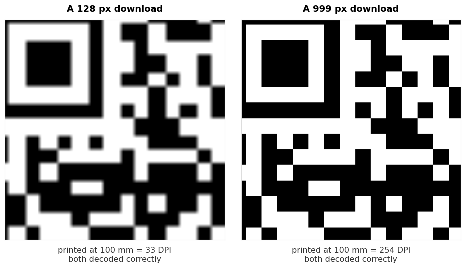

Every QR code generator produces the same pattern for the same input. That is not marketing, it is the standard: feed identical text into any two correct tools and you get an identical arrangement of squares. So if the output is the same, what is there to choose between?
Quite a lot, and none of it is the code itself. It is what the tool does with your information, what file it hands you, and whether anything sits between your printed code and the thing it points at.
What an online QR code generator actually does
Three steps. It takes what you type, wraps it in whatever format that type of code needs, and draws the result.
The wrapping is the part people do not see. A website address goes in as it is. WiFi details become WIFI:T:WPA;S:name;P:password;;. Contact details become a block of vCard text. A phone number becomes tel:. Each kind of code has an agreed format, and getting that format right is most of what a generator is for.
Beyond that there is no secret sauce, which is worth knowing because it tells you where the real differences are.
1. Does the code expire
This is the most expensive thing to get wrong, because you find out after printing.
A static code holds your actual data. Nothing sits behind it, there is no account, and it cannot expire. A dynamic code holds a short link on the generator's own domain, which redirects to your destination. That redirect belongs to them.
Dynamic codes have a real advantage: you can change the destination after printing. They also have a real risk. If the free tier ends, the scan limit is reached, or the company closes, your printed code stops working and there is nothing you can do about it.
For anything printed, use a static code. If you need to change the destination later, point a static code at a short path on a domain you own and redirect from there. You get both properties and you control the only part that can break. Our guide to static vs dynamic QR codes covers the tradeoff in full.
2. Does your data leave your browser
Worth thinking about in proportion to what you are typing. A link to your public homepage is not sensitive. Your WiFi password, your mobile number or a client's details are a different matter.
Some generators build the code in your browser. Others send what you type to a server and send a picture back. The second kind means your text passed through somebody else's machine and may be in a log.
There is a simple test that needs no trust at all:
- Load the generator page.
- Turn off your internet connection.
- Make a code.
If it still works, the code is being built on your device. If it fails, your data was being sent somewhere. Our generators pass this test, and we mention it because it is checkable rather than because you should take our word for it.
3. What resolution do you get
Many generators hand you a small PNG, often 200 to 300 pixels, which is the size shown on screen rather than a size meant for print. That is fine for a website and starts to matter when the code goes on paper.
The arithmetic is simple. Printers work in dots per inch, and 300 DPI is the normal standard for print:
| Printed at | From a 256 px file | From a 999 px file |
|---|---|---|
| 25 mm, a business card | 260 DPI | 1015 DPI |
| 30 mm, a table card | 217 DPI | 846 DPI |
| 50 mm, a flyer | 130 DPI | 507 DPI |
| 100 mm, a poster | 65 DPI | 254 DPI |
| 150 mm, a window sign | 43 DPI | 169 DPI |
A 256 pixel download is comfortable on a business card and falls apart on a poster. Our generators download at 999 pixels for this reason, which stays sharp up to about 150 mm.
What we measured, and what surprised us
We expected to be able to show that a low resolution download fails to scan when printed large. So we tested it: the same code exported at 128, 256, 512, 999 and 2000 pixels, each one scaled up to a 100 mm print at 300 DPI, then decoded.
All of them decoded. So we added increasing amounts of blur, the way a camera and a printed surface would, and looked for where each one broke.
| Source file | Survived blur up to | Failed at |
|---|---|---|
| 128 px | 0.88 of a module | 1.00 |
| 256 px | 0.88 of a module | 1.00 |
| 512 px | 0.88 of a module | 1.00 |
| 999 px | 0.88 of a module | 1.00 |
| 2000 px | 0.88 of a module | 1.00 |
Every one of them failed at the same point. The resolution of the file you download made no measurable difference to whether the code scanned.
That contradicts advice you will see everywhere, including advice we had been inclined to give ourselves. So what does resolution cost you?

It costs you how the thing looks. The low resolution version has soft, smeared edges that are obvious on a printed poster next to clean type. Nobody fails to scan it. Plenty of people notice it looks cheap.
Download at a decent resolution for appearance, not for function. And when a printed code genuinely will not scan, resolution is not the thing to go looking at. Size, contrast and the quiet zone are, and we measured those in why won't this QR code scan.
One limit on this test worth stating plainly: it is a simulation. We scaled and blurred digitally rather than running a real print job through real ink on real paper and photographing it with a phone. Ink spread on absorbent stock is a genuine effect we did not reproduce. What the test does show is that in clean conditions, source resolution is not the variable that decides whether a code decodes.
4. Can you download SVG
If anything is going to a printer, this is the answer to the whole resolution question. An SVG has no pixels at all. It stores the squares as shapes, so it is exactly as sharp at 15 mm as at 2 metres, and a print shop would rather have it.
Use PNG for screens, email signatures and anywhere the code will be displayed at roughly the size you exported it. Use SVG for anything a printer touches. Our customiser exports SVG, and the bulk generator exports a whole batch of them at once.
5. Signup, watermarks and limits
Three things that turn a free tool into a paid one after you have done the work:
- An account wall at the download step. You build the code, then hand over an email to get it.
- A watermark or logo baked into the image, removable for a fee.
- Scan limits, which only exist on dynamic codes, and which stop a printed code working once reached.
None of these is dishonest if it is stated up front. The problem is finding out at the end. A quick way to tell: if a tool asks for an email before giving you an image of a pattern it already drew on screen, the product being sold is your email address.
6. Does it build the right format
The least visible difference and the one that causes the strangest bugs. Each code type has a format, and getting it subtly wrong produces a code that scans perfectly and then does the wrong thing.
Examples we have measured on this site:
- A WiFi password containing a semicolon, written in without escaping, arrives at the phone cut short at the semicolon. The code scans, the connection fails, nothing explains why. We covered this in what is inside a WiFi QR code.
- A non-English character encoded as Latin-1 instead of UTF-8 turns
CaféintoCaféor loses it altogether. - A location encoded as a long map link instead of the short form makes a code 5.2 times the area for the same place, measured in our location format test.
You cannot check this by looking at the code. You check it by scanning the finished code with an ordinary QR scanner and reading the text that comes back. Our scanner does this, and so does any other. Thirty seconds, before anything is printed.
Common questions
Are free online QR code generators safe to use?
The code itself carries no risk, since it is a pattern holding text. The questions worth asking are whether your data is sent to a server and whether the code is dynamic and therefore dependent on that company staying in business. Static codes made in your browser raise neither question.
Do QR codes from free generators expire?
Static ones never do. There is no account behind them and nothing to renew. Dynamic ones can stop working when a trial ends or a scan limit is reached, which is the single most common reason a printed code dies.
Which file format should I download?
PNG for screens, SVG for print. If a tool only offers a small PNG and you are printing large, the code will still scan but will look soft.
Does a bigger download make the code scan better?
Not according to our test. Files from 128 px to 2000 px all failed at the same amount of blur. Resolution affects how the printed code looks, not whether it reads.
Can I make a QR code without the internet?
If the generator runs in your browser, yes. Load the page, disconnect, and it keeps working. That is also the test for whether your data is being uploaded.
How do I know the code contains what I meant?
Scan it with a plain QR scanner and read the text back. This catches typos, encoding faults and format mistakes, all before you have printed anything.
Is there a limit to how many codes I can make?
With a browser based generator there is nothing to limit. Nothing is stored and no server is involved, so making one code or five hundred costs the same, which is nothing. The bulk generator takes a list and returns the lot.